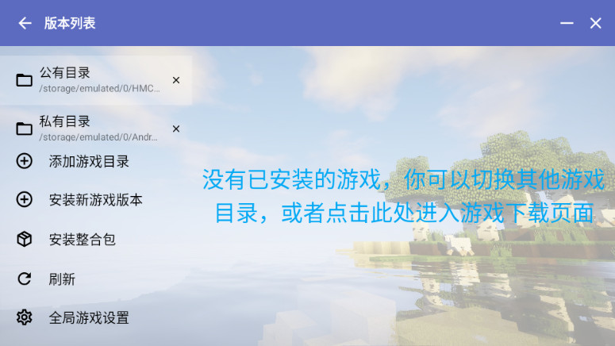

从一个启动按钮到整套生态：HMCL 这些年的迭代逻辑
一个关注启动器生态的老玩家，从最新版本倒推 HMCL 的来路、迭代节奏和团队一直在死磕的方向。
现状：现在这版能做什么
去HMCL官网晃了一圈，手上这版打开的第一感受是——它已经不是一个"启动游戏"的壳了。主界面左侧三个分组，账户、游戏、通用，从 Java 版本管理到多人联机房间，从整合包导入导出到外置验证服务器对接，日常能碰到的场景几乎都覆盖了。右下角那个启动按钮依然醒目，但按钮背后堆起来的东西已经比早期版本厚了好几个量级。

让我觉得变化最明显的两个地方：一是版本列表页，公有目录、私有目录、安装新版本、安装整合包全在这一页集散，不再像早期那样散在各种子菜单里；二是多人联机页，房间口令功能是我前几个版本还没见到的模块——房主在游戏里对局域网开放拿到端口，回来启动器里填端口建房间，朋友凭一个口令就能加进来。这个设计完全踩中了国内玩家远程开黑的痛点，不再需要各自装内网穿透工具折腾半天。
来路：从哪起步，关键转折点在哪
早期的 HMCL 其实很简单——就是一个帮你定位 Java、选好版本、双击启动的工具。那会儿启动器的核心任务只有一个：让不同版本的 Minecraft 能在同一台机器上跑起来，别互相打架。公有目录和私有目录的概念就是在那个阶段引入的——一个版本一个独立目录，存档、模组、配置互不干扰，这个设计到现在还在用，是整个启动器的根基。
第一个大转折是内置 Java 管理。在此之前，玩家得自己装 JDK 然后在设置里手动指定路径，版本对不上就报一堆看不懂的错误。好在从官方下载拿到的版本里，HMCL 直接把不同版本的 Java 打包进启动器，自动根据游戏版本匹配合适的版本，用户零配置就能开玩。这一下把启动器的门槛拉低了一大截，从"给老玩家用的工具"变成了"第一次装就能玩"的入门入口。
第二个大转折是外置登录。国内第三方服务器绝大多数不用微软账户体系，而是走 authlib-injector 那套外置验证。HMCL 在某一版里把这个底层组件集成了进来，玩家不用再装额外的注入器，直接在账户界面填验证站地址就能登录第三方服务器。这步让 HMCL 从一个"只支持正版"的启动器，变成了同时覆盖正版、离线、外置登录三种模式的全能选手。
第三个转折是模组管理和整合包生态的打通。版本列表页里"安装整合包"这个入口不是一开始就有的——早期 HMCL 只管启动，模组安装要手动进目录拖文件。后来模组管理器加进来，能看到已装模组、能一键启停、能检查依赖。再后来整合包导入导出功能补齐，调好的一套配置可以打包分享给朋友，对方导入即用。到这一步，启动器已经从"启动工具"变成了"游戏环境的完整管家"。

第四个转折是最近的多人联机房间功能。这个功能出现的时间最晚，但它的定位很清晰——不是替代 Realms，也不是替代官方的好友联机，而是解决"我和朋友临时开黑"这个最常见的场景。不用公网 IP，不用端口映射，一个口令搞定。
规律：团队一直在死磕什么
把这几个转折串起来看，HMCL 的迭代逻辑其实很清晰：它一直在死磕"一站式 + 国内玩家适配"。
一站式体现在——每加一个功能，目标都是"让玩家不用再装另一个工具"。Java 管理是为了让你不用自己装 JDK，外置登录是为了让你不用另装注入器，模组管理是为了让你不用手动进目录，房间口令是为了让你不用装内网穿透。每一步都在减少启动器和玩家之间的摩擦。
国内玩家适配更有意思。外置登录是国内服务器的刚需，这个功能优先级排得很高；房间口令瞄准的是国内家庭宽带普遍没有公网 IP 的现状；甚至连默认下载源都有多个镜像可选——这些都是只在国内环境下才会碰到的问题，团队显然是在持续收集这方面的反馈。
但有一件事我一直注意到：高级参数调优的入口藏得深，文档也写得简略。翻了翻hmcl文档，JVM 参数的细粒度调优、游戏启动命令行的自定义、模组加载器的高级配置——这些功能不是没有，但说明确实简略。团队的资源明显更多地投在了"让 90% 的玩家 5 分钟内开玩"这条线上，而不是"让 10% 的硬核玩家把启动器玩出花"。
还有一个有趣的观察：更新节奏上，大版本间隔越来越长，但每个版本里塞的东西越来越多。早期可能几个月就有一个小版本迭代，现在感觉大版本之间隔得久了，但每次更新带来的功能都是实打实的新模块，不是修修补补。这说明团队可能从小步快跑转向了集中攻坚——攒够一批成熟的功能点再一起放出来，而不是边做边放。
预判：照这个路线，下一步大概率是什么
从迭代规律推，几个比较有把握的方向：
第一，联机房间功能会继续打磨。现在的房间口令解决了"能连上"的问题，但稳定性、断线重连、房间列表这些还没覆盖。如果团队继续重视国内玩家的远程开黑场景，这块很可能是下一阶段的重点。
第二，资源包和光影的管理可能会更深一层。现在整合包分享已经能导出模组和配置，但资源包、光影、材质这些还是独立文件转发。如果"一站式"的逻辑继续往下走，整合包导出应该会把这些也包进去，或者至少在启动器里加一个统一的资源管理入口。
第三，关于高级玩家的诉求会不会被更多关注，不好说。目前来看团队的重心还是在入门玩家这条线上，但社区里硬核玩家的声音一直存在，说不定某个版本会专门为他们加一波高级功能的文档和入口。
当然这些都是从迭代规律推的，不当官方口径传。启动器这个产品一旦生态成型，团队的优先级往往会跟着用户规模走——当入门玩家的盘子稳住之后，往更深的方向挖还是往更广的场景拓，取决于他们觉得哪条线的边际价值更高。